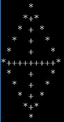
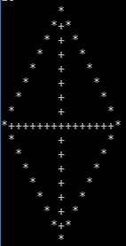
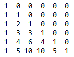
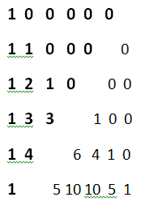

Problem 1: Rectangle. Will you Convert?
Problem Statement
Given a Rectangle of length, L, and breadth, B. The length and breadth of the rectangle are increasing at the rates Rl and Rb respectively. Both L and B are in meters and Rl and Rb are in meter per second. Find the time t in seconds at which the rectangle will convert into a square.Note: The conversion is not possible at all situations. If so print '-1'
Input Format
* The first contains a single integer 'T' that represents the number of test cases* The first line of each test case contains two space seperated integers that represent the length and breadth of the rectangle respectively
* The second line of each test case contains two space seperated integers that represent the rate of increase in length and breadth of the rectangle respectively
Constraints
* 1 <= T <= 100* 1 <= L,B <= 10^8
* 1 <= Rl,Rb <= 10^8
Output Format
* For each test case print the time taken for the rectangle to convert into a square.* The time must be printed upto six floating points
* In case, there is no possibility of conversion print -1
Sample Input 0
32 1
1 2
5 3
8 4
10 10
1 2
Sample Output 0
1.000000-1
0.000000
Explanation 0
* Case 1: Initially at t=0 L=2 and B=1. Therefore at t=1, L=2+1=3 and B=1+2=3.Thus at t=1, L=B ,so the rectangle becomes a square.* Case 2: Initially length is greater than breadth. Also the rate of increase in length is greater than that of breadth. Therefore the rectangle never becomes a square. Thus, output=-1
* Case 3: The measurements given represent a square at t=0. Thus output = 0.000000
Problem 2: Try to print me!
Problem Statement
Given the no. of rows, print the required pattern which is given below.No. of rows , n = 11

No. of rows , n = 16

Input Format
* The first and only line of the input consists of a integer representing the no. of rowsConstraints
* 1 <= n <= 100Output Format
* Print the required pattern.* If the no. of rows is even, print (n + 1) rows.
* If the no. of rows is odd, print (n) rows.
Sample Input 0
16Sample Output 0
Problem 3: Pascal's Matrix
Problem Statement
A Pascal's Matrix is an NXN matrix containing the first N rows of the Pascal's triangle aligned to the left and all the other elements are zero.Pascal's Matrix for N=6 is given below.

Find the sum of upper half of the Pascal's Matrix w.r.t Seondary diagonal. The Sum might be very large, so compute the sum modulo (10^9+7)
Note: Pascal's matrix is always a square matrix
Input Format
* The first line constains a single integer T representing the number of test cases* Each test case consists of a single integer N denoting the number of rows of the Pascals matrix
Constraints
* 1 <= T <= 100* 1 <= N <= 100
Output Format
*For each test case, print the sum of upperhalf wrt secondary diagonal modulo (10^9+7)Example:

Output: (1)+(1+1)+(1+2+1)+(1+3+3)+(1+4)+(1)=20
Sample Input 0
26
2
Sample Output 0
202
Explanation 0
* Case 1: N=6As per the above matrix sum of upper half mod 10^9+7 is 20
* Case 2: N=2, similarly sum of upper half mod 10^9+7 is 2